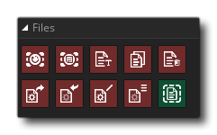

Les actions de fichiers traitent de deux types de fichiers différents - les fichiers tampons et les fichiers Ini - et ont également certaines actions de fichiers génériques pour renommer ou copier des fichiers existants. Les fichiers tampons sont créés en sauvegardant les données d'un tampon que vous avez précédemment créé et ces données peuvent ensuite être chargées dans un tampon à tout moment dans le futur. Vous pouvez trouver plus d'informations sur les tampons ici: Actions tampons.
Les fichiers Ini sont de petits fichiers légers qui sont compatibles avec la plupart des plates-formes. Elles sont idéales pour stocker de petites informations, comme les préférences d'interface, les scores locaux élevés, les données de niveau, etc. et sont très faciles à utiliser. Les fichiers Ini ne doivent pas avoir été créés précédemment pour utiliser ces actions, et vous pouvez lire à partir d'un fichier Ini inexistant et vous obtiendrez simplement un default return value (que vous spécifiez), cependant nous vous recommandons de créer au moins un fichier ini "base" pour l'ouverture et la modification avant d'utiliser les actions. Ce fichier ini de base peut être créé en appelant simplement l'action Open Ini File suivie du fichier Close Ini, car la fermeture du fichier l'écrira sur le disque, ou vous pouvez en inclure une dans les fichiers inclus de l'arborescence des ressources. Si vous utilisez un fichier inclus dans l'arborescence des ressources comme base Ini, vous devriez également lire la section du manuel sur le fonctionnement du système de fichiers.
Les actions suivantes existent pour travailler avec des fichiers: